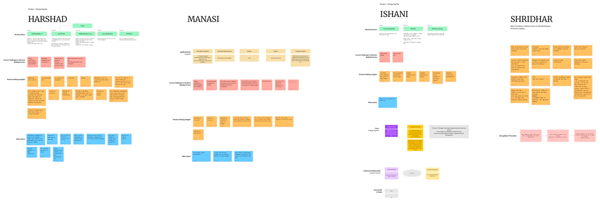
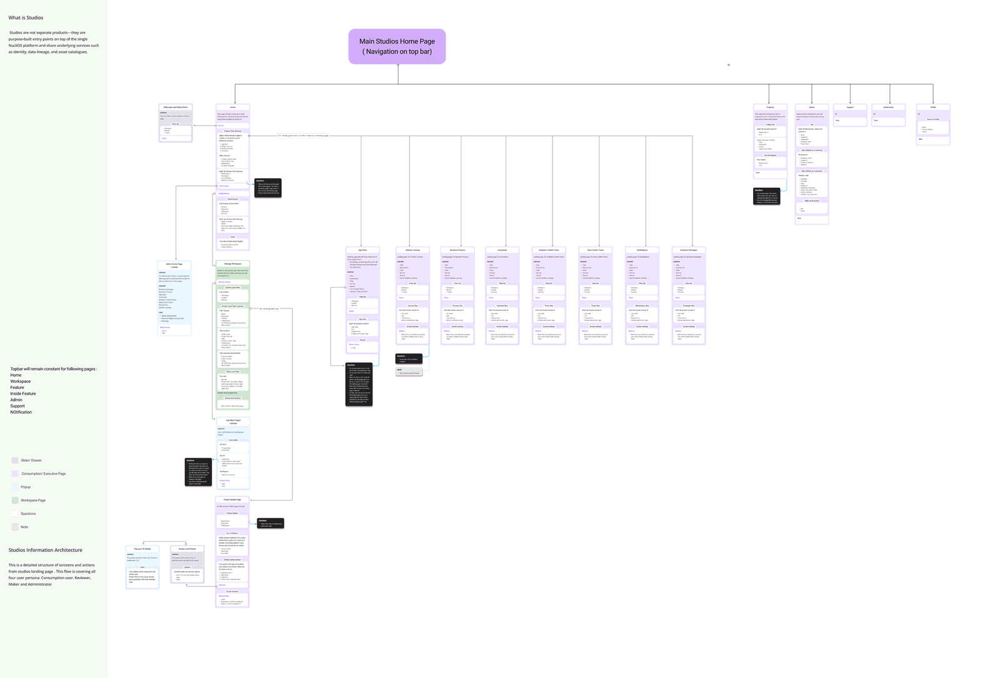
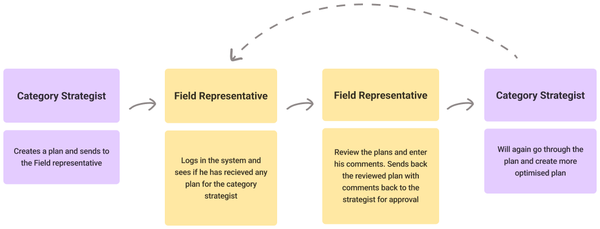
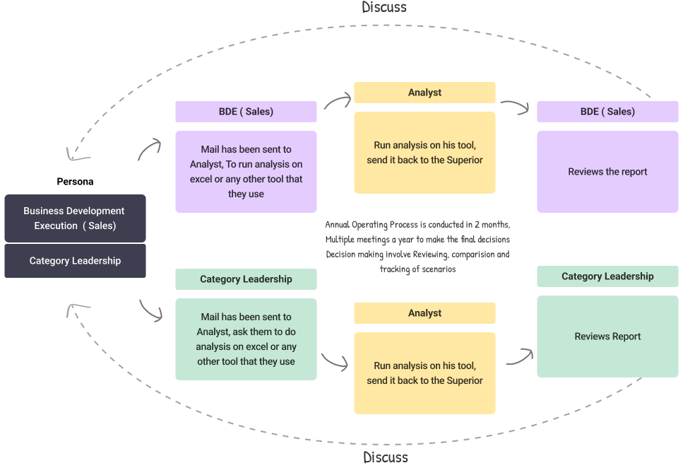
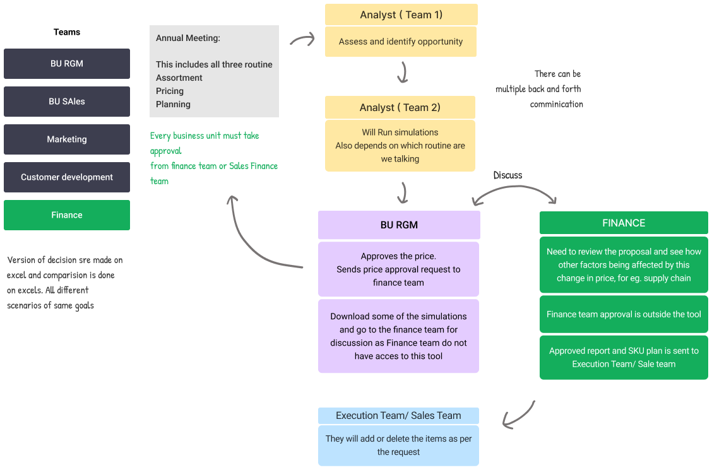
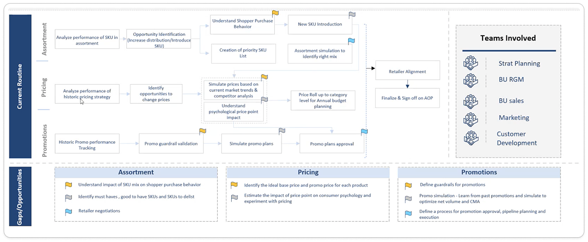
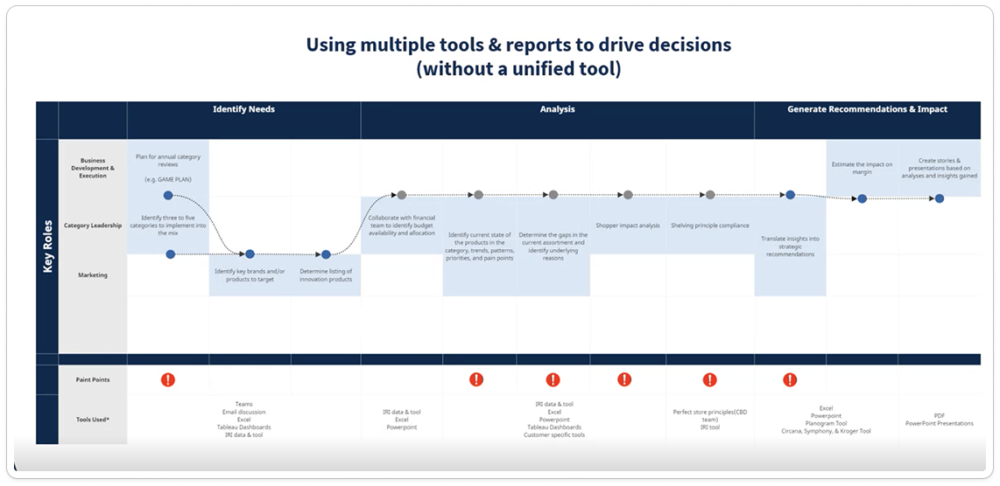

Fig. Screenshot from the Figma file where the interviews were documented
MathCo is an enterprise AI and analytics company that helps organizations transform data into actionable business decisions. It builds customized data products, integrates AI into business workflows, and enables companies to scale intelligence across operations. Their approach focuses on connecting data, analytics, and decision-making to drive measurable outcomes and improve efficiency.

Request access to open the live link.
NucliOS is MathCo’s proprietary AI-powered platform that powers this transformation. It converts raw data into governed, contextual intelligence, enables AI agents and applications, and supports end-to-end workflows—from data preparation to decision automation—helping enterprises move faster from insights to impactful business actions.
The organization’s decision-making process spans multiple functions and personas, bringing together diverse inputs, perspectives, and actions across the business. While this creates a rich foundation for informed decisions, the overall journey remains fragmented and difficult to trace end to end.
Information, insights, and decisions are often created and managed across disconnected systems and informal channels. As a result, critical context, rationale, and dependencies are not consistently captured or carried forward. This makes it challenging to understand how decisions originate, evolve, and ultimately translate into outcomes. The lack of a unified and traceable flow leads to limited visibility, inefficiencies, repeated work, and misalignment—hindering the organization’s ability to make consistent, scalable, and impact-driven decisions.
Mapping the end-to-end decision flow will help uncover users’ micro-goals, while exposing gaps, lost context, and inefficiencies across the journey.
A deeper understanding of how information and decisions evolve across functions will enable optimization of the process and improve visibility and transparency.
While insights today exist in silos across decision intelligence, data-driven practices, and collaboration, the key opportunity lies in stitching them together to create a unified, traceable decision-making ecosystem.

In the table below the decision-making journey has been captured by before, after and during stages of decision making
User interviews revealed a consistent decision-making journey, comprising Five distinct stages that apply to all the projects.
Navigating vast datasets, surfacing relevant metrics, filtering noise, and identifying meaningful signals worth investigating
Ability to validate, that what system is recommending is in sync with users’ intuition
Confirming the accuracy, reliability, and relevance of the findings derived from data analysis
Introduce scenario modeling, historical benchmarking, and performance evaluation across similar products, plans, or business conditions.
Cross-functional communication, clarification of rationale, negotiation of priorities, and alignment between stakeholders with different goals and constraints.
Extends beyond a simple sign-off process, incorporating governance, accountability, financial implications, compliance considerations, and execution readiness.
This framework represents a high-level view of how decisions evolve within an organization—from the initial identification of an opportunity to the final approval and implementation of an action. However, in practice, each stage contains its own deeply layered decision-making ecosystem. Every transition to the next stage is supported by multiple micro-decisions, evaluations, discussions, trade-offs, and iterations occurring within teams, systems, and workflows.
The business revolves around enabling a continuous, collaborative assortment planning system where centrally defined strategies (Category Strategist) are validated, adapted, and optimized through field-level insights (Field Representative).
The system must support ongoing planogram implementation and dynamic modification, ensuring that any performance-driven decision is seamlessly communicated, validated, and iterated across stakeholders in near real-time.

A system to enable bi-monthly, scenario-driven stocking decisions, where teams can continuously evaluate performance, simulate assortment changes, and optimize inventory distribution, ensuring the right products are available at the right place and time with minimal inefficiencies.

The business revolves around enabling a multi-functional, collaborative annual planning system that defines and operationalizes the retail assortment, pricing, and promotion strategy across the organization. This system must support end-to-end decision orchestration, where insights are generated, validated, simulated, and approved across multiple teams—including strategy, sales, marketing, analysts, and finance—before being executed in the market.
Given the complexity of assortment planning—balancing customer demand, financial targets, and operational constraints—the platform must facilitate continuous back-and-forth collaboration, scenario comparison, and structured approvals, ensuring that decisions are aligned, traceable, and optimized before execution.

The information is fragmented across multiple tools and functions are part of decision making various stages. In the above image it has been clearly identified that there are three stages in decision making starting from Identifying Needs, Running analysis and ending with Generating Recommendation reviewing the Impact.


The user interview led us to identify three categories of user personas:
After reviewing multiple user journeys and analyzing the key challenges and goals across every stage of the decision-making process, we identified recurring patterns and opportunities. Based on these insights, we iterated on potential solutions and documented them along with their descriptions, expected impact, and relevance to different user personas and functions, helping establish a clearer direction for improving collaboration and decision efficiency.
Less information overload and discovery time with the Insights Dashboard.
Less back-and-forth with the Collaborative Decision Workspace.
Shorter approval cycle time with Smart Notifications.